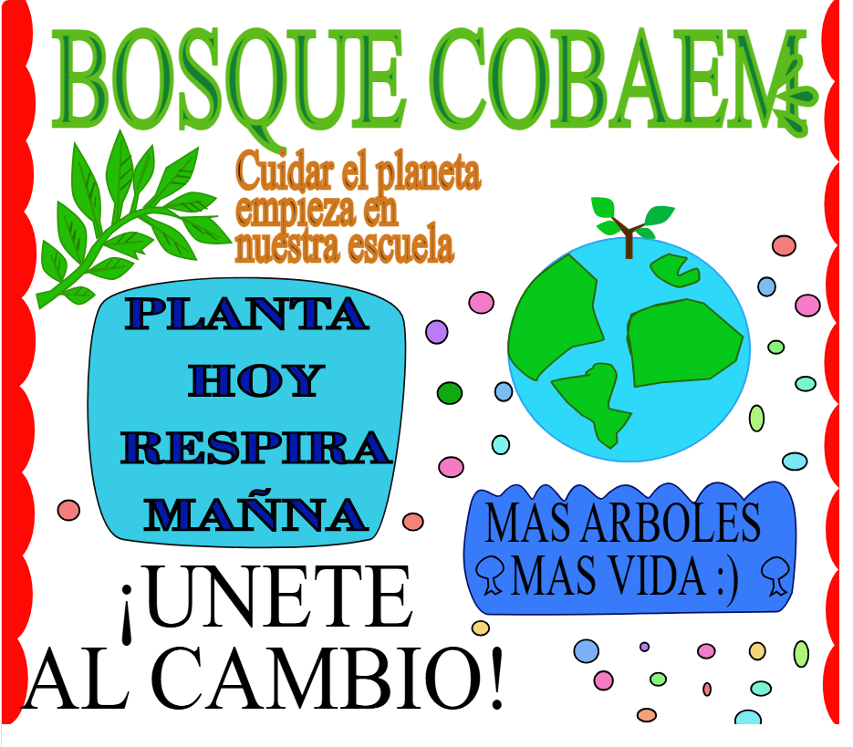

Práctica 1: Figuras básicas y texto en trayecto
Esta imagen muestra el dominio inicial de las herramientas de dibujo analógico y digital en Inkscape.
- Figuras Básicas: Se insertaron cuadrados, rectángulos, elipses, estrellas y polígonos utilizando las herramientas nativas de la barra lateral.
- Edición de Bordes y Rellenos: Se aplicaron diferentes colores de relleno sólidos, grosores de trazo y estilos de línea (como el trazo discontinuo/punteado de color naranja en el rectángulo y el morado en el decágono).
- Herramienta Espiral y Texto en Trayecto: En la esquina inferior izquierda se usó la herramienta Crear espirales. Posteriormente, para el diseño central con las letras "COBAEM", se escribió el texto y, seleccionando tanto el texto como una espiral guía, se aplicó la opción Texto > Poner en trayecto, adaptando las letras a la forma curva.

Práctica 2: Origami vectorial
Esta práctica representa figuras complejas de animales al estilo origami mediante dibujo lineal.
- Herramienta Pluma Bézier: Se utilizó principalmente la herramienta Dibujar curvas Bézier y líneas rectas (tecla B). Con ella se trazaron segmentos de recta perfectos conectando nodos para dar el efecto de papel plegado a los vectores del oso (bear), gato (cat), elefante (elephant), cerdo (pig), tortuga (turtle) y caracol (snail).
- Duplicación y Simetría: Para figuras simétricas como la tortuga, se dibujó un lado, se duplicó (Ctrl + D) y se reflejó horizontalmente.
- Tipografía: Se organizaron etiquetas de texto en la parte inferior con fuentes tipográficas bold de colores planos combinando con cada animal.

Práctica 3: Ilustración calcado (Oso)
Un ejercicio clásico de ilustración vectorial infantil que modela la cabeza de un oso.
- Operaciones Booleanas (Unión): La silueta principal (cabeza y orejas) se estructuró dibujando tres círculos independientes con la herramienta de elipses. Después, se seleccionaron todos y se fusionaron en una sola pieza mediante Trayecto > Unión.
- Capas y Superposición: El hocico blanco y los ojos se generaron con más elipses superpuestas en capas superiores.
- Edición de Nodos: Las pupilas mirando a la derecha y las curvas de la boca/mejillas se estilizaron convirtiendo los objetos a trayectos (Trayecto > Objeto a trayecto) y manipulando los nodos con la herramienta Editar nodos por trayecto (F2).

Práctica 4: Rostro de Mickey Mouse
Un diseño avanzado del rostro de Mickey Mouse enfocado en la precisión de formas cerradas.
- Herramienta de Construcción de Formas y Operaciones Booleanas: Tal como indica el texto inferior de la práctica, se utilizaron círculos base para la cabeza y las orejas. Las curvas complejas del rostro blanco, la boca abierta y la lengua se lograron mediante cortes precisos utilizando Trayecto > Diferencia, Intersección o utilizando directamente la Herramienta de constructor de formas para unificar y eliminar regiones sobrantes tras cruzar los trazos base.
- Rellenos de Contraste: Se aplicaron rellenos puros negros, blancos y grises sin degradados para emular el estilo de dibujo animado clásico.

Práctica 5: Patrones abstractos y entrelazados
Una lámina de diseño geométrico abstracto compuesta por patrones entrelazados (nudos vectoriales).
- Efectos de Trayecto y Degradados: Las figuras muestran cintas que parecen pasar una por encima de la otra. Esto se logra aplicando rellenos con Degradados lineales y radiales que van desde un color sólido hacia la transparencia o hacia un tono más claro, simulando profundidad y sombras de superposición.
- Cortes con Operaciones Booleanas: Para lograr el efecto visual de "entrelazado" (donde un anillo pasa por dentro de otro), se duplicaron secciones de los trayectos y se usó Trayecto > División o Diferencia para cortar los fragmentos exactos donde se cruzan las líneas.

Práctica 6: Máscara de recorte paisajística
Un ejercicio limpio y simétrico utilizando el concepto de máscaras de recorte sobre una fotografía paisajística.
- Creación del Elemento de Corte: Se dibujó un trébol de cuatro hojas (o cuatro corazones orientados hacia el centro) mediante curvas Bézier o unificación de círculos y polígonos.
- Máscara de Recorte (Clip): Se importó una imagen de alta resolución de un lago de montaña. El trébol vectorizado se colocó exactamente encima de la imagen de fondo. Posteriormente, se seleccionaron ambos elementos y se ejecutó el comando Objeto > Recorte > Aplicar. Esto hace que la foto se visualice únicamente dentro de los límites vectoriales del trébol.

Práctica 7: Tipografía con textura
Una aplicación directa de máscaras de recorte sobre elementos tipográficos de gran grosor.
- Texto como Contenedor: Se insertó un objeto de texto con una tipografía Sans-Serif de estilo "Impact" o "Bold" muy gruesa, extendiendo el nombre completo horizontalmente.
- Aplicación del Recorte: Se importó una fotografía de un paisaje rocoso nevado y se envió al fondo. El texto se posicionó encima, se seleccionaron ambos objetos (imagen y texto) y se aplicó la ruta Objeto > Recorte > Aplicar (o Mask). Como resultado, la textura fotográfica quedó atrapada dentro del cuerpo de cada una de las letras.

Práctica: Guía de cortes y trazos
Una guía técnica de ejercicios prácticos para comprender el comportamiento de los comandos del menú "Trayecto".
- Diferencia (Esquina inferior izquierda / Arriba al centro): Muestra cómo al superponer un círculo sobre la esquina de un cuadrado y aplicar Trayecto > Diferencia, la forma del círculo "muerde" y sustrae esa sección del cuadrado.
- Intersección (Arriba, tercera figura): Se conserva únicamente el fragmento donde se cruzaban originalmente el cuadrado y el círculo.
- Exclusión o División (Figuras con rellenos amarillos y verdes): Permite ver cómo interactúan los contornos al dividirse en trazos independientes, aislando los bordes del resto de las figuras geométricas.

Proyecto Parcial: Logo Bosque COBAEM
Esta imagen muestra una ilustración de estilo orgánico y escolar ("Bosque COBAEM") construida mediante dibujo digital.
- Trazado Libre con Presión: Se utilizó la herramienta Caligrafía (Ctrl + F6) o la Pluma Bézier configurada en modo Suavizar de trayecto para lograr trazos fluidos con aspecto de mano alzada en las letras del título, las copas de los árboles, los tallos de las plantas y el listón inferior.
- Organización en Capas y Color: Se definieron contornos oscuros (marrones y verdes secos) rellenos con la herramienta Bote de pintura (Rellenar áreas delimitadas) utilizando colores planos brillantes para simular un dibujo coloreado.
- Duplicación de Elementos: Las hojas simétricas de las ramas laterales y las pequeñas plantas del suelo se realizaron dibujando una muestra original que luego fue duplicada (Ctrl + D), rotada y distribuida a lo largo del espacio de composición.

Proyecto Parcial: Cartel COBAEM
Esta imagen muestra una ilustración de estilo orgánico y escolar ("Bosque COBAEM") construida mediante dibujo digital.
- Trazado Libre con Presión: Se utilizó la herramienta Caligrafía (Ctrl + F6) o la Pluma Bézier configurada en modo Suavizar de trayecto para lograr trazos fluidos con aspecto de mano alzada en las letras del título, las copas de los árboles, los tallos de las plantas y el listón inferior.
- Organización en Capas y Color: Se definieron contornos oscuros (marrones y verdes secos) rellenos con la herramienta Bote de pintura (Rellenar áreas delimitadas) utilizando colores planos brillantes para simular un dibujo coloreado.
- Duplicación de Elementos: Las hojas simétricas de las ramas laterales y las pequeñas plantas del suelo se realizaron dibujando una muestra original que luego fue duplicada (Ctrl + D), rotada y distribuida a lo largo del espacio de composición.

Vectorización 1: Control de curvas y siluetas
Un ejercicio de siluetas vectoriales sólidas diseñado para perfeccionar el control de curvas e intersecciones geométricas limpias.
- Dibujo de Nodos y Tiradores: Con la Pluma Bézier, se definieron los contornos de formas complejas (labios, as de picas, silueta de ave, flama, pieza de rompecabezas y mariposa). Se empleó la herramienta Editar nodos (F2) para estirar los tiradores, convirtiendo nodos esquinas en nodos simétricos o suavizados para obtener curvas perfectas y fluidas.
- Operaciones Booleanas de Combinación: Figuras como el as de picas o la pieza de rompecabezas combinaron formas básicas iniciales (círculos y rectángulos) que posteriormente se unificaron o restaron a través de Trayecto > Unión y Trayecto > Diferencia para conseguir una sola silueta limpia y de color azul plano.

Vectorización 2: Espacio negativo y formas asimétricas
Este ejercicio trabaja la técnica del espacio negativo y el calco avanzado de formas orgánicas asimétricas.
- Calco Manual (Hoja): La hoja de color coral se trazó nodo por nodo siguiendo el contorno irregular de una referencia botánica, cuidando mantener vértices muy agudos en las puntas mediante esquinas rectas de nodos.
- Técnica de Espacio Negativo (Oso): El rostro del oso se construyó superponiendo trayectos. En lugar de dibujar líneas aisladas, se vectorizaron las "manchas" o zonas de luz como figuras sólidas independientes. Los detalles internos (ojos, líneas de la nariz y cejas) se lograron recortando formas blancas sobre la silueta base amarilla mediante Trayecto > Diferencia o simplemente superponiendo capas del color de fondo para generar el contraste visual.

Vectorización 3: Ilustración avanzada estilo cartoon
Una ilustración vectorial compleja con profundidad, volumen y un acabado profesional de estilo cartoon.
- Estructura de Contornos Gruesos: Se utilizó un trazo negro grueso y uniforme para delimitar todas las facciones del payaso, asegurando que todos los trayectos se mantuvieran cerrados para facilitar la aplicación del color.
- Capas de Luces y Sombras: El volumen en el sombrero azul, el cabello verde, la nariz roja y el moño se logró mediante la técnica de superposición de capas. Se dibujó una forma base oscura, encima se colocó el color medio y, finalmente, se trazaron formas vectoriales semitransparentes o de un tono mucho más claro para simular los brillos (luces altas).
- Fondo de Contraste: En la capa inferior (al fondo) se colocaron dos círculos perfectos concéntricos (uno naranja y uno crema) para enmarcar el rostro del personaje y darle mayor equilibrio a la composición digital.